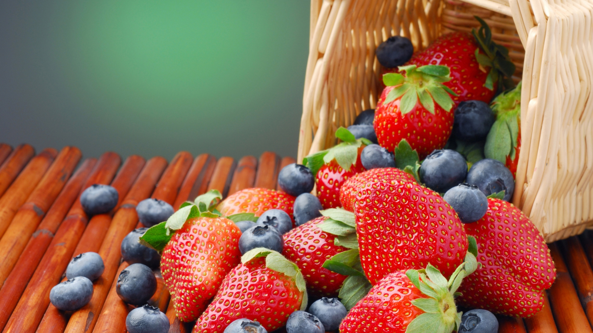

Buah Berry untuk Kesehatan
Blueberry termasuk dalam keluarga berry yang rasanya paling manis sehingga disukai banyak orang. Dibalik rasanya yang manis ternyata buah blueberry mengandung banyak fitonutrien, yakni nutrisi nabati yang bermanfaat untuk kesehatan.
Kerap disebut arbei atau berry, buah beri – dengan berbagai varian seperti beri hitam, biru, stroberi, maupun goji beri, ternyata memiliki manfaat besar bagi kesehatan tubuh, terutama otak
Secara gamblang, buah beri adalah salah satu senjata ampuh untuk menghambat penurunan fungsi otak akibat penuaan. Sebuah studi di Harvard menemukan mereka yang mengkonsumsi beri mampu memperlambat kehilangan memori hingga tiga tahun.
Hal tersebut disebabkan oleh besarnya kandungan flavanoid, sebuah antioksidan murni yang berfungsi melawan peradangan serta melindungi sel tubuh dari radikal bebas, seperti yang pernah diungkapkan Nancy Copperman, Public Health Initiatives di The North Shore-LIJ Health System, New York. Selain itu, beri juga mengandung anthocyanidin, zat yang membuat beri kaya warna, namun juga memiliki kemampuan melintasi sekat antara darah dan otak yang lebih jauh menuju ke bagian otak yang digunakan untuk mengingat dan berpikir.
Buah berry memiliki banyak manfaat. Mulai dari pencegah keguguran, menekan pertumbuhan tumor dan kanker, hingga mencegah pembekuan darah.
Tidak cuma itu, buah berry berguna juga untuk otak. Berdasar pada riset yang diterbitkan dalam Annals of Neurology, wanita yang konsumsi dua cangkir strawberry serta satu cangkir blueberry mempunyai kekuatan kognitif yang tambah baik waktu menua dibanding orang yang tidak konsumsi blueberry.
Buah berry dapat juga menghindar penyakit Parkinson. Orang yang konsumsi dua cangkir berry per minggu mempunyai resiko 25 % lebih rendah terserang parkinson. Hasil riset diterbitkan dalam jurnal Neurology. Berry dapat juga mencegah penyakit Alzheimer.
Jenis Buah Berry

Jenis Khasiat
Blackberry Di kalangan wanita Indian dikenal sebagai pencegah keguguran, obat infeksi mulut dan mata (abad 16)
Blueberry Asam elagik berkhasiat menekan pertumbuhan tumor
Cranberry Flavonoid berkhasiat mencegah kanker dan aterosklerosis
Raspberry Membantu mengontrol kadar gula darah (antosianin)
Redberry Dikenal sebagai obat tradisional flu dan pilek, antirematik, anti radang
Strawberry Anti radang, membantu mencegah pembekuan darah
Itulah khasiat dan manfaat buah berry untuk kesehatan tubuh, semoga buah berry ini dapat bermanfaat untuk anda yang memiliki masalah pada kesehatan. Salam sehat ^^